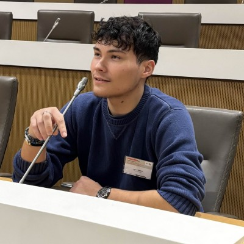

Portfolio 2026
Logan Ferreira
Apprenti ingénieur IA & Robotique, chef de projet IT chez Legrand et responsable associatif.

InformatiqueInnovationEngagement
Technique & Engagement.
Apprenti ingénieur en IA & Robotique à 3iL, mon parcours est une fusion entre informatique et engagement.
Apprenti chef de projet IT chez Legrand Groupe, où je gère des licences et des audits logiciels, et ancien Conseiller Régional Jeune de Nouvelle-Aquitaine, je relie technique, méthode et engagement.
En ce moment
Mes engagements actuels.
- 2025 - 2028Chef de projetLegrand Groupe · Licences & audits logiciels
- 2025 - 2028Diplôme d'ingénieur3iL · Parcours IA & Robotique
- 2026 - 2027Vice-PrésidentBureau des Étudiants de 3iL
- 2026 - 2027PrésidentOEIL · Organisation des Étudiants en Informatique de Limoges
- 2025 - 2028Représentant étudiantConseil d'administration de 3iL Ingénieurs
Le parcours
Choisissez votre angle.
01
Expériences
Construire. Optimiser. Transmettre.
3 étapes 02Études
Apprendre. Relier. Évoluer.
4 étapes 03Associatif
Fédérer. Représenter. Agir.
5 étapes 04Citoyen
Écouter. Débattre. Représenter.
2 étapes 05Réalisations
Imaginer. Développer. Partager.
2 projets 06Concours
Se mesurer. Créer vite. Progresser.
4 défis